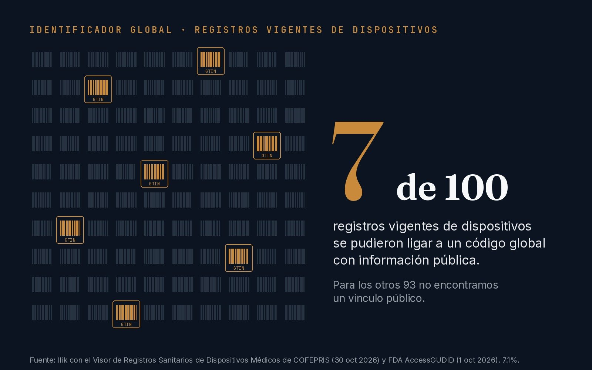
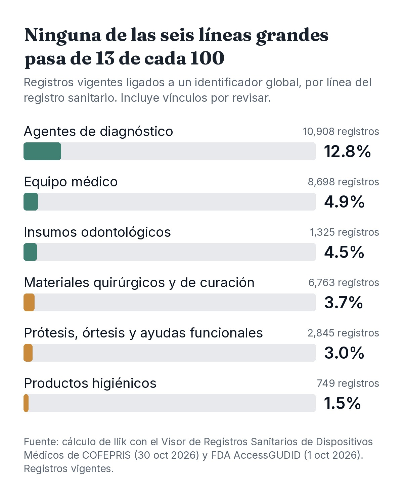
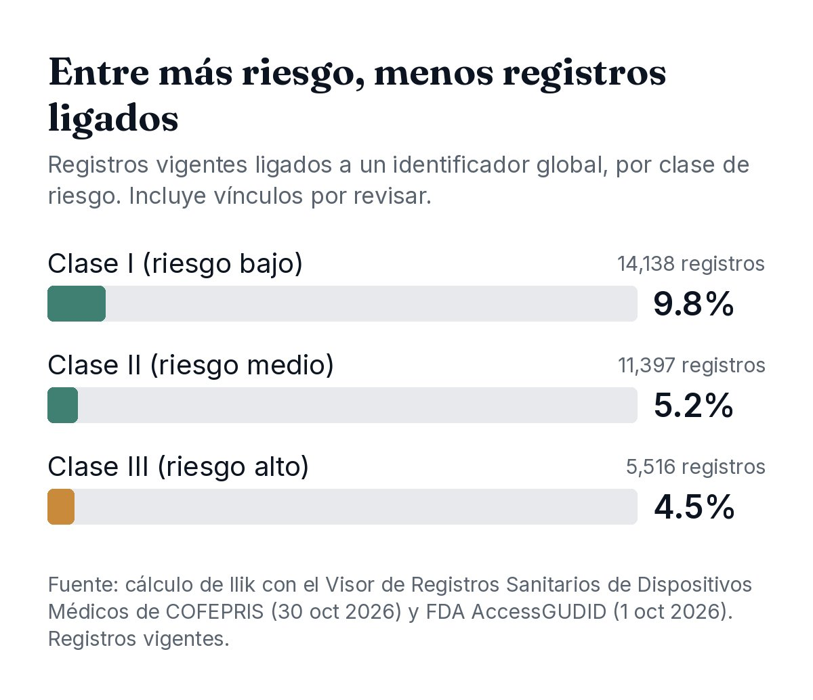

Observatorio / Dispositivos médicos
InvestigaciónSolo 7 de cada 100 registros sanitarios vigentes de dispositivos se pueden ligar a un código global con datos públicos
La base pública de registros sanitarios de dispositivos de COFEPRIS no tiene un campo de código de barras. Con la base pública de la FDA pudimos ligar a un código global solo 7 de cada 100 registros vigentes; en material quirúrgico, prótesis, productos higiénicos y dispositivos de mayor riesgo, todavía menos. Sin esa llave, comparar proveedores depende de la descripción.

Para saber si dos proveedores le venden el mismo producto, un hospital necesita una llave que lo identifique igual en las dos cotizaciones. En Estados Unidos y en la Unión Europea esa llave es un identificador único del dispositivo. En México no aparece en la base pública de registros sanitarios.
El Visor de Registros Sanitarios de Dispositivos Médicos de COFEPRIS tenía 31,357 registros vigentes al 30 de octubre de 2026. La base trae 14 campos (titular, nombre comercial, clase de riesgo, fechas, indicaciones, entre otros) y ninguno es un código de barras.1
Estados Unidos sí lo publica. Su base AccessGUDID reúne los identificadores de los dispositivos que se venden allá; cuando el identificador lo asigna GS1, es el mismo GTIN del código de barras del empaque. Tomamos las 696 empresas que aparecen en esa base y también como titulares en México, y buscamos para cada registro mexicano los identificadores cuyo nombre comercial coincide.2
Siete de cada cien
De los 31,357 registros vigentes, 2,238 quedaron ligados a por lo menos un identificador: 7.1%. De esos, 1,730 tienen un vínculo de confianza alta (5.5% del total) y 508 hay que revisarlos a mano.12
No es parejo. En agentes de diagnóstico llega a 12.8%. En equipo médico baja a 4.9%; en insumos odontológicos, a 4.5%; en materiales quirúrgicos y de curación, a 3.7%; en prótesis, órtesis y ayudas funcionales, a 3.0%, y en productos higiénicos, a 1.5%.12

Por clase de riesgo, entre más riesgo, menos registros pudimos ligar con información pública. Clase I, 9.8%; clase II, 5.2%; clase III, la de mayor riesgo, 4.5%.12

Qué dice la cifra y qué no
Que un registro no quede ligado no significa que el producto no tenga código de barras. Puede tenerlo; lo que no existe es una fuente pública mexicana que diga cuál es. Además, la base de la FDA solo incluye lo que se vende en Estados Unidos, y nuestro método prefiere no ligar a ligar mal. Por eso la cifra se lee como un piso: 5.5% con vínculo de confianza alta y 7.1% al sumar los que faltan por revisar. Mide lo que hoy se puede identificar con información pública, no cuántos productos tienen código.
Para compras, la consecuencia es práctica. Sin un identificador común, el mismo catéter puede llegar con descripciones distintas de dos proveedores, y saber que es el mismo producto depende de que alguien lo reconozca. En material quirúrgico y en prótesis, donde la información pública liga menos de 4 de cada 100 registros, ese reconocimiento queda casi todo en manos de su equipo.
Hoy, en México, el código de un dispositivo lo tiene su proveedor, no una base pública.
Lo que cambia en mayo de 2027
La NOM-137-SSA1-2025, de etiquetado de dispositivos médicos, se publicó en el Diario Oficial de la Federación el 19 de mayo de 2026. Sustituye a la norma de 2008 y entra en vigor el 14 de mayo de 2027.34 Después de esa fecha hay 180 días naturales más para agotar las existencias de envases y producto terminado hechos con la regla anterior.3
La norma pide que la etiqueta lleve el número de lote o de serie, y deja los códigos de barras, los QR y el RFID como complemento opcional. Solo pide un identificador único para el software que funciona como dispositivo médico; para los dispositivos físicos no crea uno como el de Estados Unidos o la Unión Europea.3 En otras palabras: desde 2027 las etiquetas dirán más, pero seguirá sin haber un catálogo público que ligue un registro sanitario con un código.
Qué pueden hacer desde compras
Pidan a cada proveedor de dispositivos el GTIN de cada artículo en su lista de precios 2027 y guárdenlo en su catálogo junto a su clave interna. Con ese dato, comparar dos proveedores ya no depende de cómo cada uno describe el producto. Si no pueden hacerlo con todo, empiecen por material quirúrgico y prótesis: ahí la información pública apenas liga 3.7% y 3.0% de los registros.
Nota metodológica
Fuentes: descarga completa del Visor de Registros Sanitarios de Dispositivos Médicos de COFEPRIS del 30 de octubre de 2026 (33,575 registros, 31,357 vigentes; 14 campos, ninguno de código de barras) y FDA AccessGUDID, versión del 1 de octubre de 2026 (1,550,466 identificadores de las 696 empresas que también son titulares en México). Vínculo: el titular de COFEPRIS se empata con la empresa de la FDA por la raíz de su nombre, sin razón social; el registro se liga a un identificador cuando todas las palabras distintivas de su nombre comercial aparecen en la marca, el modelo o la descripción de la FDA; si varios registros coinciden con el mismo identificador, gana el de nombre más específico y los empates se marcan como ambiguos. Las figuras no incluyen 69 registros de líneas con menos de 60 registros ni 306 fuera de las clases I a III (302 sin clase asignada y 4 en clase 0); los porcentajes de las figuras incluyen los vínculos por revisar. El 7.1% suma los vínculos de confianza alta y los que requieren revisión. Límites: solo cubre productos que también se venden en Estados Unidos; las marcas exclusivas de México y los titulares que son distribuidores locales no tienen identificador en esa base; la cifra no mide cuántos productos tienen GTIN. Un cruce más laxo, por familia de marca, liga más registros, pero no identifica el producto exacto; aun así, la mayoría queda sin vínculo. Lo que se afirma de la NOM-137 se revisó contra su texto en el Diario Oficial de la Federación: numerales 5.2, 5.10.6, 5.10.11.1, 6.3.1 y 11, y transitorio segundo. No se usó ningún dato de ningún hospital.
Fuentes
- COFEPRIS. "Visor de Registros Sanitarios de Dispositivos Médicos". Descarga completa del 30 de octubre de 2026. ↩
- U.S. Food and Drug Administration y National Library of Medicine. "AccessGUDID", versión del 1 de octubre de 2026. Ver en accessgudid.nlm.nih.gov ↩
- Diario Oficial de la Federación. "Norma Oficial Mexicana NOM-137-SSA1-2025, Etiquetado de dispositivos médicos", 19 de mayo de 2026. Ver en sidof.segob.gob.mx ↩
- Secretaría de Economía, PLATIICA. "NOM-137-SSA1-2025", ficha de la norma. Ver en platiica.economia.gob.mx ↩

Fundador de Ilik. Estadístico de formación, con más de ocho años al frente de la inteligencia comercial del canal hospitalario privado en la industria farmacéutica.